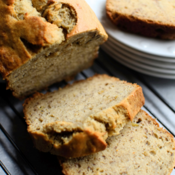

Classic Banana Bread

Banana Bread
Classic banana bread is a timeless and beloved baked good that showcases the natural sweetness and rich flavor of ripe bananas. Its moist, tender crumb, paired with the subtle warmth of cinnamon, creates a comforting treat that never fails to evoke feelings of nostalgia and home.
Ingredients
- 3 ripe bananas (about 1 cup mashed)
- 1/2 cup (1 stick) unsalted butter, softened
- 1 cup granulated sugar
- 2 large eggs
- 1 1/2 cups all-purpose flour
- 1 teaspoon baking soda
- 1/2 teaspoon baking powder
- 1/2 teaspoon salt
- 1/2 teaspoon ground cinnamon (optional)
- 1/4 teaspoon ground nutmeg (optional)
- 1/2 cup chopped walnuts or pecans (optional)
- Cooking spray or butter, for greasing the loaf pan
Steps
- Preheat your oven to 350°F (175°C). Grease a 9x5-inch loaf pan with cooking spray or butter.
- In a medium-sized bowl, peel and mash the ripe bananas with a fork until they form a smooth puree. Set aside.
- In a large mixing bowl, cream the softened butter and granulated sugar together until light and fluffy using a hand mixer or stand mixer.
- Add the eggs, one at a time, to the butter-sugar mixture, beating well after each addition. Then, stir in the pure vanilla extract.
- In a separate bowl, whisk together the all-purpose flour, baking soda, baking powder, salt, ground cinnamon (if using), and ground nutmeg (if using).
- Gradually add the dry ingredients to the wet ingredients, mixing until just combined. Avoid overmixing to prevent a dense loaf.
- If desired, fold in the chopped walnuts or pecans to add a delightful crunch and nutty flavor to the banana bread.
- Pour the batter into the prepared loaf pan, spreading it evenly.
- Bake the banana bread in the preheated oven for about 55 to 60 minutes or until a toothpick inserted into the center comes out clean.
- Once the banana bread is done, remove it from the oven and let it cool in the pan for about 10 minutes.
- Carefully transfer the banana bread from the pan to a wire rack to cool completely before slicing.
Return Home